컴퓨터응용밀링기능사 (2010-07-11 기출문제)
1과목: 기계재료 및 요소
1. 황동의 내식성을 개량하기 위하여 7:3 황동에 1% 정도의 주석을 넣은 것은?
- 톰백
- 네이벌 황동
- 애드미럴티 황동
- 델타메탈
(정답률: 61%)

2. 회전수가 250 rpm인 원동축에 모듈이 4, 잇수가 30인 기어가 있다. 속도비가 1/3인 경우 중심거리는?
- 80mm
- 240mm
- 480mm
- 600mm
(정답률: 53%)
3. 탄소강이 200~300℃ 의 온도에서 취성이 발생되는 현상을 무엇이라 하는가?
- 청열 취성
- 적열 취성
- 고온 취성
- 상온 취성
(정답률: 44%)
4. 미하나이트 주철에 대한 설명 중 틀린 것은?
- 담금질이 가능하다.
- 흑연의 형상을 미세화한다.
- 연성과 인성이 아주 크다.
- 두께의 차에 의한 감수성이 아주 크다.
(정답률: 51%)
5. 비금속 스프링에 속하지 않는 것은?
- 고무 스프링
- 공기 스프링
- 액체 스프링
- 동합금 스프링
(정답률: 83%)
6. 탬을 입체캠과 평면캠으로 분류했을 때 입체캠에 속하는 것은?
- 판 캠
- 정면 캠
- 직선 운동 캠
- 구면 캠
(정답률: 55%)
7. 역지밸브라고도 하며 유체를 한 방향으로만 흘러가게 하고 역류하지 않도록 하게 하는 밸브는?
- 스톱밸브
- 슬루스 밸브
- 체크 밸브
- 안전 밸브
(정답률: 42%)
8. 너트(Nut)의 풀림을 방지하기 위하여 주로 사용되는 핀은?
- 평행 핀
- 분할 핀
- 테이퍼 핀
- 스프링 핀
(정답률: 65%)
9. 알루미늄 합금을 주조용과 가공용으로 분류했을 때 가공용 알루미늄 합금에 속하는 것은?
- 실루민
- 라우탈
- 하이드로 날륨
- 두랄루민
(정답률: 54%)
10. 합금강의 재질과 KS 규격기호의 명칭이 알맞게 짝지어진 것은?
- SNC - 니켈 코발트강
- STS - 고속도강
- SKH - 쾌삭강
- SPS - 스프링강
(정답률: 49%)
11. 구름베어링의 구성요소로서 회전체 사이의 일정한 간격을 유지해 주는 것은?
- 스러스트
- 리테이너
- 내륜
- 외륜
(정답률: 58%)
12. 브레이크 블록의 길이와 나비가 60 mm × 20 mm 이고 브레이크 블록을 미는 힘이 900 N 일 때 제동 압력은?
- 0.75 N/mm2
- 7.5 N/mm2
- 75 N/mm2
- 750 N/mm2
(정답률: 49%)
13. 풀림의 목적이 아닌 것은?(오류 신고가 접수된 문제입니다. 반드시 정답과 해설을 확인하시기 바랍니다.)
- 잔류응력 제거
- 경도의 저하
- 절삭성 저하
- 냉간 가공성의 개선
(정답률: 52%)
14. 백래시(back lash)가 적어 정밀 이송 장치에 많이 쓰이는 나사는?
- 너클 나사
- 볼 나사
- 톱니 나사
- 미터 나사
(정답률: 60%)
15. 초경 절삭공구용 코팅 인서트의 특징이 아닌 것은?
- 내마모성이 우수하다.
- 내크레이터성이 우수하다.
- 내산화성이 우수하다.
- 비철금속은 절삭이 불가능하다.
(정답률: 76%)
2과목: 기계제도(절삭부분)
16. 베어링 번호표시가 6815 일 때 안지름 치수는 몇 mm 인가?
- 15 mm
- 65 mm
- 75 mm
- 315 mm
(정답률: 73%)
17. 대상물의 보이지 않는 부분의 모양을 표시하는 용도로 사용하는 선의 종류는?
- 가는 파선 또는 굵은 파선
- 굵은 실선
- 가는 실선
- 굵은 2점 쇄선
(정답률: 55%)
18. 치수에 사용되는 치수보조 기호 설명으로 틀린 것은?
- Sø : 원의 지름
- R : 반지름
- □ : 정사각형의 변
- C : 45° 모떼기
(정답률: 68%)
19. 표면거칠기의 표시 중 그림과 같은 면의 지시기호가 나타내는 의미는?
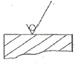
- 제거가공을 허락하지 않는 것을 지시
- 제거가공을 필요하다는 것을 지시
- 절삭 등 제거가공의 필요여부를 문제 삼지 않는 지시
- 가공면을 정밀 연삭해야하는 지시
(정답률: 70%)
20. 다음 보기의 설명을 만족하기 위하여 그림의 빈칸에 들어갈 것으로 옳은 것은?
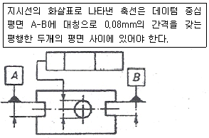
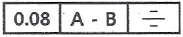
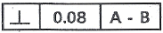
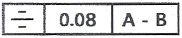
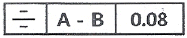
(정답률: 66%)
21. 제3각법으로 정투상도를 작도할 때 보기와 같은 정면도와 평면도를 보고 누락된 우측면도로 가장 적합한 것은?
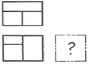
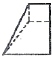
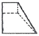
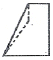
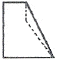
(정답률: 41%)
22. 그림과 같은 도면의 단면도 명칭으로 가장 적합한 것은?
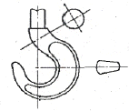
- 한쪽 단면도
- 회전 도시 단면도
- 부분 단면도
- 조합에 의한 단면도
(정답률: 77%)
23. 용접 기호 중 현장 용접의 의미를 나타내는 것은?
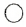
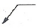
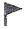
(정답률: 66%)
24. 감속기 하우징의 기름 주입구 나사가 PF 1/2 - A 로 표시되어 있었다. 올바르게 설명한 것은?
- 관용 평행나사 A 급
- 관용 평행나사 호칭경 1"
- 관용 테이퍼나사 A 급
- 관용 가는 나사 호칭경 1"
(정답률: 46%)
25. 끼워 맞춤 기호의 치수 기입에 관한 것이다. 바르게 기입된 것은?
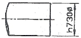
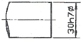
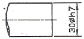
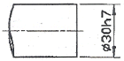
(정답률: 76%)
26. 탭 작업 중 탭의 파손 원인으로 가장 관계가 먼 것은?
- 구멍이 너무 작거나 구부러진 경우
- 탭이 소재보다 경도가 높은 경우
- 탭이 구멍 바닥에 부딪혔을 경우
- 탭이 경사지게 들어간 경우
(정답률: 66%)
27. 밀링 머신의 부속품과 부속 장치 중 원주를 분할하는데 사용되는 것은?
- 슬로팅 장치
- 분할대
- 수직축 장치
- 래크 절삭 장치
(정답률: 77%)
28. 다음 바이트에 관한 설명 중 틀린 것은?
- 윗면 경사각이 크면 절삭성이 좋다.
- 여유각은 공구의 앞면이나 옆면이 공작물과 마찰을 줄이기 위한 각이다.
- 칩(chip)을 연속적으로 길게 흐르게 하기 위해 칩브레이커를 붙인다.
- 바이트의 종류에는 단체 바이트와 클램프 바이트 등이 있다.
(정답률: 65%)
29. 연삭 가공의 일반적인 특징으로 적합하지 않은 것은?
- 치수 정밀도가 높다.
- 칩의 크기가 매우 작다.
- 가공면의 표면 거칠기가 불량하다.
- 경화된 강과 같은 단단한 재료를 가공할 수 있다.
(정답률: 71%)
30. 다음 중 각도 측정용 게이지가 아닌 것은?
- 옵티컬 플랫
- 사인바
- 콤비네이션 세트
- 오토 콜리메이터
(정답률: 56%)
3과목: 기계공작법
31. 수평 밀링머신의 플레인 커터 작업에서 하향 절삭의 장점이 아닌 것은?
- 공작물의 고정이 쉽다.
- 날의 마멸이 적고 수명이 길다.
- 날 자리 간격이 짧고 가공면이 깨끗하다.
- 백 래시 제거장치가 필요 없다.
(정답률: 70%)
32. 밀링커터를 매분 220rpm으로 회전시켜 절삭속도 110m/min로 공작물을 절삭하려 할 때 밀링커터의 직경은 약 몇 mm인가?
- 150
- 160
- 170
- 180
(정답률: 53%)
33. 절삭 가공할 때 절삭온도를 측정하는 방법이 아닌 것은?
- 손으로 측정
- 열전대로 측정
- 칩의 색깔로 측정
- 칼로리메터로 측정
(정답률: 83%)
34. 보통 선반에서 테이퍼 절삭방법이 아닌 것은?
- 심압대 편위에 의한 방법
- 복식 공구대에 의한 방법
- 테이퍼 절삭장치에 의한 방법
- 차동 분할법에 의한 방법
(정답률: 57%)
35. 연삭가공 중 숫돌바퀴의 질이 균일하지 못하거나, 일감의 영향을 받아 숫돌바퀴의 모양이 점차 변한다. 이렇게 변형된 숫돌을 정확한 모양으로 바르게 고치는 작업을 무엇이라 하는가?
- 드레싱
- 밸런싱
- 채터링
- 트루잉
(정답률: 45%)
36. 일반적으로 드릴링 머신에서 가공하기 곤란한 작업은?
- 카운터 싱킹
- 스플라인 홈
- 스폿 페이싱
- 리밍
(정답률: 56%)
37. 절삭공구의 옆면과 가공물의 마찰에 의하여 절삭공구의 옆면이 평행하게 마모되는 것은?
- 크레이터 마모
- 치핑
- 플랭크 마모
- 온도 파손
(정답률: 59%)
38. 구성인선(built-up edge) 방지를 위한 것이 아닌 것은?
- 절삭 깊이를 작게 한다.
- 경사각을 작게 한다.
- 윤활성이 좋은 절삭 유제를 사용한다.
- 절삭속도를 크게 한다.
(정답률: 68%)
39. 측정량이 증가, 또는 감소하는 방향이 다름으로써 생기는 동일치수에 대한 지시량의 차를 무엇이라 하는가?
- 개인 오차
- 우연 오차
- 후퇴 오차
- 접촉 오차
(정답률: 43%)
40. 여러 가지 절삭공구를 방사형으로 공정에 맞게 설치하여 볼트, 작은 나사 및 핀과 같은 작은 일감을 대량 생산 하거나 능률적으로 가공할 때 주로 사용하는 선반은?
- 터릿 선반
- 자동 선반
- 모방 선반
- 공구 선반
(정답률: 48%)
4과목: CNC공작법 및 안전관리
41. 화학적 가공의 일반적인 특징 설명으로 틀린 것은?
- 가공 경화나 표면의 변질층이 생긴다.
- 재료의 표면 전체를 동시에 가공할 수 있다.
- 재료의 경도나 강도에 관계없이 가공할 수 있다.
- 변형이나 거스러미가 발생하지 않는다.
(정답률: 32%)
42. 소재의 불필요한 부분을 칩(chip)의 형태로 제거하여 원하는 최종 형상을 만드는 가공법은?
- 소성 가공법
- 접합 가공법
- 절삭 가공법
- 분말 가공법
(정답률: 64%)
43. 머시닝센터에서 공구교환을 지령하는 기능은?
- G기능
- S기능
- F기능
- M기능
(정답률: 59%)
44. CNC 공작기계 좌표계에서 이동위치를 지령하는 방식에 해당하지 않는 것은?
- 절대지령 방식
- 증분지령 방식
- 잔여지령 방식
- 혼합지령 방식
(정답률: 60%)
45. CNC 선반 프로그램 중에서 사이클 가공에 대한 설명으로 옳은 것은?
- 반복 절삭하는 과정을 몇 개의 지령절로 명령하므로 프로그램을 간단히 할 수 있는 기능이다.
- 사이클 가공에서 이송속도는 기계에서 정해진다.
- 나사 절삭시에는 사용할 수 없다.
- 테이퍼를 가공할 때만 사용한다.
(정답률: 60%)
46. CAD/CAM 시스템에서 입력장치가 아닌 것은?
- 라이트 펜(light pen)
- 마우스(mouse)
- 태블릿(tablet)
- 플로터(plotter)
(정답률: 61%)
47. 1000 rpm 으로 회전하는 스핀들에서 2회전 동안 일시정지(dwell)를 주려고 한다. 정지시간을 구하고, NC프로그램으로 올바른 것은?
- 정지시간 : 0.22초, NC프로그램 : G04 X0.22
- 정지시간 : 0.12초, NC프로그램 : G03 X0.12
- 정지시간 : 0.12초, NC프로그램 : G04 X0.12
- 정지시간 : 0.22초, NC프로그램 : G03 X0.22
(정답률: 52%)
48. 일감을 측정하거나 정확한 거리의 이동 또는 공구보정 할 때 사용하며 현 위치가 좌표계의 원점이 되고 필요에 따라 그 위치를 기준점으로 지정할 수 있는 좌표계는?
- 상대 좌표계
- 기계 좌표계
- 공구 좌표계
- 임시 좌표계
(정답률: 62%)
49. CNC선반 작업시 안전 및 유의 사항으로 틀린 것은?
- 작업하기 전에 프로그램의 이상 유무를 확인한다.
- 비상정지 버튼의 위치를 확인하고 있어야 한다.
- 툴링(tooling)시 프로그램 원점의 위치를 확인하고, 충돌 사고에 유의한다.
- 작업이 종료되면 반드시 기계를 원점 복귀시켜야 한다.
(정답률: 52%)
50. 다음 그림에서 시작점에서 종점으로 가공하는 머시닝센터 프로그램으로 틀린 것은?
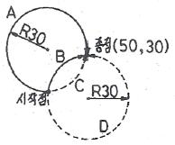
- A → G90 G02 X50. Y30. R30. F80 ;
- B → G90 G02 X50. Y30. R30. F80 ;
- C → G90 G03 X50. Y30. R30. F80 ;
- D → G90 G03 X50. Y30. R-30. F80 ;
(정답률: 33%)
51. CNC공작기계에서 이용되고 있는 서보기구의 제어 방식이 아닌 것은?
- 개방회로 방식
- 반개방회로 방식
- 폐쇄회로 방식
- 반폐쇄회로 방식
(정답률: 70%)
52. CNC 공작기계의 운전시 일상 점검사항이 아닌 것은?
- 공구의 파손이나 마모상태 확인
- 가공할 재료의 성분분석
- 공기압이나 유압상태 확인
- 각종 계기의 상태확인
(정답률: 63%)
53. CNC 선반에서 나사 절삭 사이클을 이용하여 그림과 같은 나사를 가공하려고 한다. ( )에 알맞은 것은?
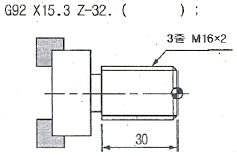
- F1.6
- F2.0
- F4.0
- F6.0
(정답률: 35%)
54. 보조기능을 프로그램을 제어하는 보조기능과 기계 보조 장치를 제어하는 보조기능으로 나눌 때 프로그램을 제어하는 보조기능은?
- M03
- M⑤
- M08
- M30
(정답률: 55%)
55. 오른손 직교좌표를 나타낸 것 중 표기가 잘못된 것은?
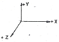
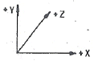
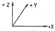
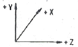
(정답률: 33%)
56. 사업장에서 사업주가 지켜야 할 질병 예방 대책이 아닌 것은?
- 건강에 관한 정기 교육일 실시한다.
- 근로자의 건강진단을 빠짐없이 실시한다.
- 사업장 환경개선을 통한 쾌적한 작업환경을 조성한다.
- 작업복을 청결히 하는 등 개인위생을 철저히 지킨다.
(정답률: 57%)
57. CNC 프로그램에서 공구 길이보정과 관계없는 준비기능은?
- G42
- G43
- G44
- G49
(정답률: 43%)
58. CNC선반 프로그램에서 나사가공 준비기능이 아닌 것은?
- G32
- G42
- G76
- G92
(정답률: 53%)
59. 다음 CNC 프로그램의 N004 블록에서 주축 회전수는?
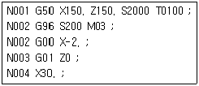
- 200 rpm
- 212 rpm
- 2000 rpm
- 2123 rpm
(정답률: 59%)
60. CNC 프로그램에서 G96 S200 M03 ; 지령에서 S200 이 뜻하는 것은?
- 분당 공구의 이송량이 200mm로 일정제어 된다.
- 1회전당 공구의 이송량이 200mm로 일정제어 된다.
- 주축의 원주속도가 200m/min로 일정제어 된다.
- 주축회전수가 200rpm으로 일정제어 된다.
(정답률: 43%)